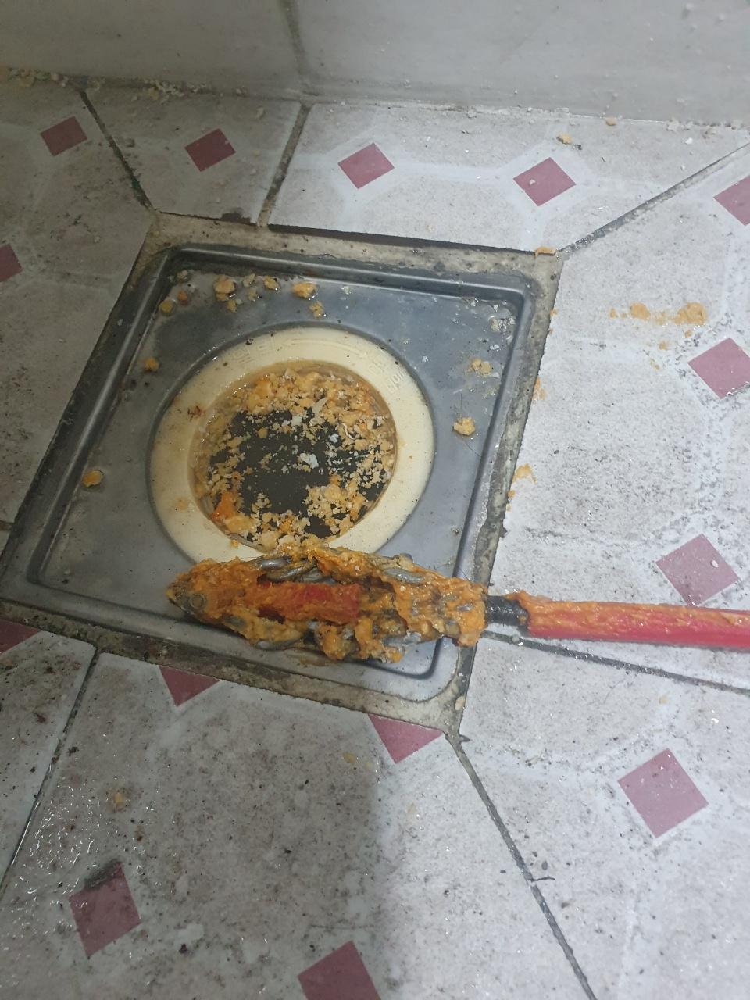
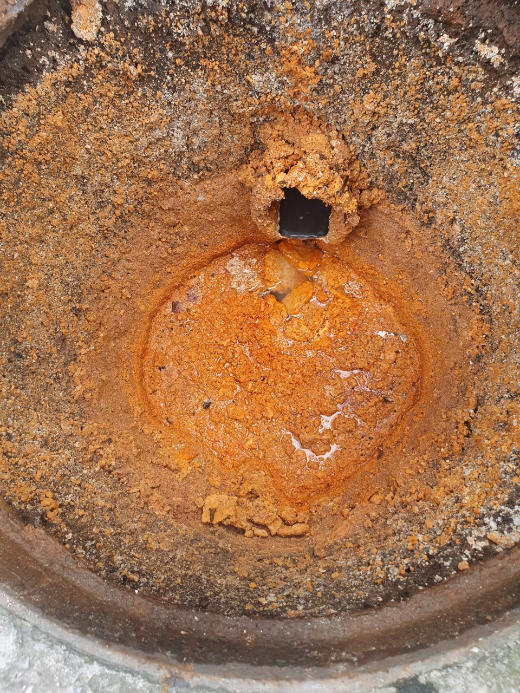
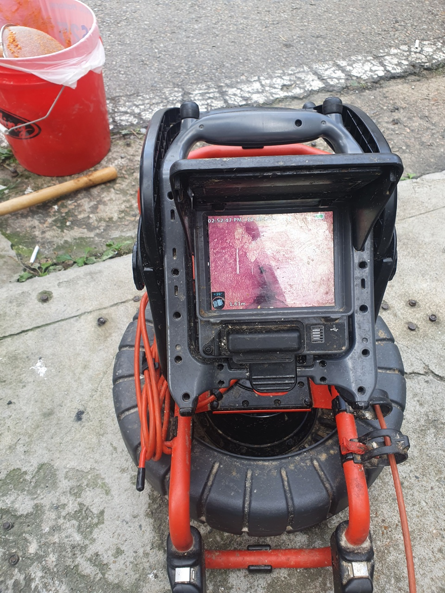
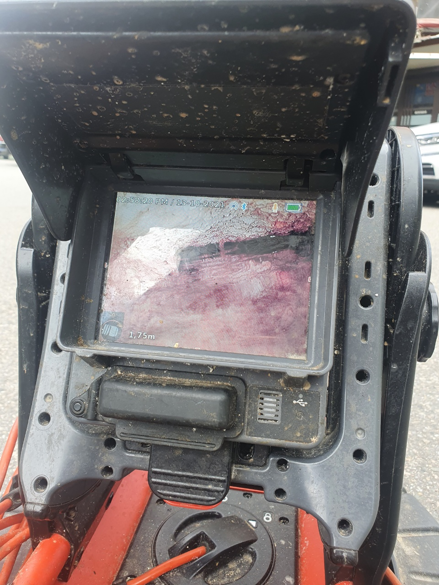
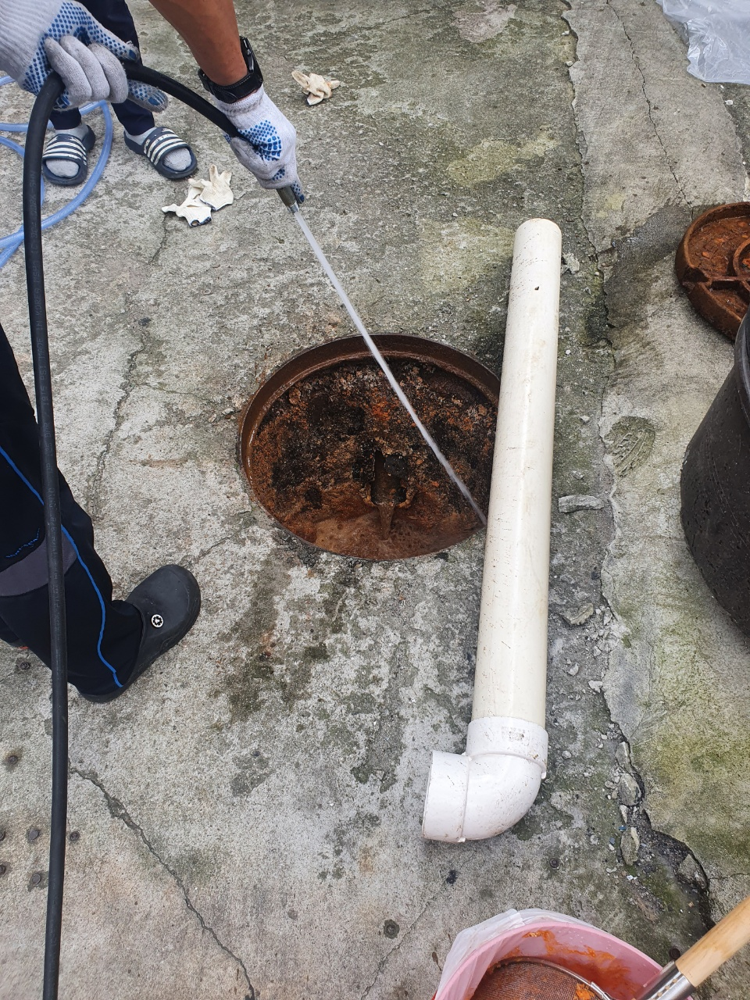

🏠 권선구 고색동 오목천동 하수구막힘 고압세척으로 깔끔한 해결해 드렸습니다!
수원 고색동 하수구막힘 전문 시공 후기

📋 작업 개요
- 위치: 수원 고색동, 고색동, 수원
- 서비스 유형: 하수구막힘, 배관막힘, 맨홀막힘, 역류해결, 뚫는업체, 고압세척
- 작업 일시: 2022. 8. 23. 23:31
- 업체명: 하수구수사대 (010-5615-2118)
🔍 문제 상황
안녕하세요.하수구수사대 입니다.반갑습니다.
지금 소개해 드릴 내용은 권선구 고색동 오목천동 하수구막힘 사례 살펴볼게요. 여름철이 되면서 덥고 습한 날씨로 인해 하수구가 막히게 된다면 일상생활 하는데 있어 많은 불편함에 따를 수밖에 없게 됩니다.
사전에 점검하고 예방하는 것이 중요할 것입니다.
관련된 불편함을 겪고 있다면 신속히 전문 업체에 연락하여 원인 파악 후 점검받는 것이 필요합니다. 권선구 고색동 오목천동 하수구막힘 관련 고객분도 막힘 현상이 발생하여 요청을 해주신 곳인데요.
아무래도 주택이다 보니, 빠르게 해결하는 것이 필요했습니다. 먼저 고객님과 일정을 조율하고 정해진 날짜와 시간을 정해 현장을 방문하였습니다. 일반적으로 배수구 등이 막혀 물이 쉽게 내려가지 않게 되면 스스로 뚫는 방법을 시도하시곤 합니다.

🔎 원인 분석
💡 전문가 진단: 사전에 점검하고 예방하는 것이 중요할 것입니다.
시중에 쉽게 살 수 있는 약품이나 장비 등을 사용하시는 분들도 많은데요.
해결되지 않을 경우에 관련 업체를 찾으시는 경우가 많은 편입니다. 작업을 의뢰받고 나간 현장도 마찬가지로 고객님 스스로 해결하려고 했다가 오히려 문제가 심각해진 곳이 많았습니다.
그러므로 혼자 해결하려고 시도하다가 잘 안된다 싶으면 전문 업체에 연락 주시는 것이 좋습니다. 메인관이 막히면서 외부 맨홀까지 피해를 보게 된 상황이었는데요. 외부 맨홀에도 물이 차올라 있는지 아무도 몰랐다고 하셨습니다.
최근 저층에서 지속적인 하수구 역류 현상을 겪었는데요.
그 외 다른 세대에서 배수구를 통해 물이 내려가는 속도가 더뎌지고 있다고 해서 그때부터 문제의 심각성을 알아차리게 되었다고 하셨습니다.

🔧 작업 과정
그리고 최근에 많이 내린 비로 외부 맨홀도 물이 배수되지 못한 채 그대로 고여 있는 현장이었는데요.
고인 물과 내부에 누적된 이물질로 인해 악취도 지독하게 발생하고 있었습니다. 우선 차오른 물을 제거하고 나서 내시경으로 보았는데요, 하수구의 경우 확실히 해결하지 못하면 추후 다시 막힐 수 있으므로 제때 조치를 취하는 것이 중요하다고 볼 수 있습니다.
깊은 곳까지 누적된 이물질을 제거해 주는 것도 필요한데요.
우선 내시경으로 상황을 확인하였습니다. 하수구를 덮고 있는 커버를 제거하고 나서 작업을 시작하였습니다. 내시경으로 내부를 들여다보니, 오랜 시간 동안 여러 가지 이물질이 배수관 속에 누적되어 있는 것이 확인되었습니다.
이러한 이물질 등을 제거하려면 고압세척이 이루어져야 하는데요. 주택과 같은 현장에서는 공용 배관이 있는데요, 해당 배관을 사용하는 세대에서 나오는 이물질 및 기름때, 음식물 등이 한 곳에 모이면서 막힘 현상이 발생하는 것입니다.
고압세척을 해야 이러한 이물질을 제거할 수 있습니다.
막힌 배관에 강한 힘의 물을 활용하여 이물질을 제거해 주기에 고인 물이 배수되는 원리인 것입니다. 고압세척을 할 때에는 많은 이물질 및 구정물이 튀게 되는 상황이 발생하므로 관리자 외에는 주변에 있지 못하게 미리 안내해 드렸습니다.
그리고 천장이나 벽면에 있는 배관에서 막힌 현상이 발생하였을 때에는 비닐 등을 보양해서 작업이 이루어지기에 이물질 등이 주변에 튀지 않도록 사전에 철저히 예방하면서 작업을 진행하고 있습니다.


✅ 작업 완료
지금까지 하수구수사대에서
권선구 고색동 오목천동 하수구막힘 사례 알아보았습니다.
경기도 수원시 권선구 매송고색로533번길 7 상가동 B층 01호 298




⚠️ 하수구 배관 막힘 예방 및 관리 가이드
- ✅ 머리카락, 비닐, 물티슈 등 물에 분해되지 않는 이물질은 하수구 유입을 절대 금지해 주세요.
- ✅ 하수구 거름망을 씌우고 모여진 이물질은 주기적으로 쓰레기통에 바로 비워주셔야 합니다.
- ✅ 배관 노후가 심할 경우 이물질이 더 쉽게 걸리므로 주기적인 배관 세척(고압세척 등)을 권장합니다.
- ✅ 작업 후 1년 이내 재발 시 하수구수사대에서 무상 A/S 보증 서비스를 제공합니다.
💡 핵심 정리
- 확실한 장비 작업(내시경 점검 및 샤프트 스케일링)으로 원인을 뿌리 뽑습니다.
- 작업 후 1년 이내에 동일한 부위 재발 시 100% 무상 A/S 서비스를 보장합니다.
- 서울 · 경기 · 인천 전 지역에 24시간 언제든 긴급 출동할 수 있도록 항시 대기 중입니다.
❓ 자주 묻는 질문 (FAQ)
🚨 수원 고색동 하수구막힘 문제로 고민이신가요?
정확한 원인 진단과 확실한 시공으로 재발 없는 해결을 약속드립니다.
24시간 긴급 출동 | 서울 · 경기 · 인천 전지역 | 1년 내 재발 시 무상 A/S